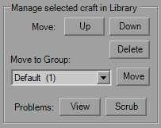

Flightgroup Library Dialog
This dialog allows you to save commonly-used Flightgroups into platform-specific library files (fg_library_*.bin) that are saved in the YOGEME directory so you can add them to missions at a later time, beyond the standard copy/paste functionality. The libraries are unique for each platform, so the craft in the TIE library are not related to the XWA library.
When you start the Library dialog the first time you will see the craft list for the current mission on the left, and an empty library on the right. The lists are shown with their platform-specific formats, so they appear as they would in the main window. This window can be resized vertically if you don't want to scroll a lot.
The center buttons are the simplest, they either add the selected mission craft to the selected library group, or they attempt to add the selected library craft to the end of the mission's craft list. Standard craft list limits apply. If the "Autoscrub" checkbox is checked, any issues will be corrected before being added to the mission (more on that later). In both lists, multi-select is possible using standard Ctrl/Shift-click and click-drag methods.
Groups are a simple way to collect ships without creating a single monstrosity of a listing. Whether you want a list of just Rebel ships, or ships specific to a campaign you're designing, it's up to you. There's no practical limit as to how many you can have in a group, or how many groups you have. The number of entries is shown in parenthesis next to the group name. The Default group cannot be deleted or renamed, if you wish to empty it you must delete all of the contained craft yourself. Groups you have created can be deleted without being empty.
All craft of the selected group are shown here. The Flightgroups are copied into the library exactly as they are at the time of adding, so that means orders, triggers, waypoints, etc. When a craft uses a Flightgroup reference somewhere in the definition it's tallied and noted in red on the right. These references are Mothership, order Targets, Arrival/Departure triggers, and Skip to Order triggers. When issues are fixed, either manually through the "Scrub" button or when "Autoscrub" is checked, the Mothership method is set to Hyperspace, Mothership craft is reset to default, Orders have the affected target type set to None, and Triggers are reset to to their default always (None).
The Up/Down buttons are there help sort the list if you wish, and they do work with multi-select as well. Deleting all craft from a Group will not delete the Group itself. You can transfer a Flightgroup to a different group by selecting it in the drop-down and using the "Move" button. The "View" problems button will show the references that were flagged for the selected craft. If the number of problems is excessive a report will not be generated, instead select fewer craft at one time. If you do only have one craft selected, then oh well, that's a lot of FG references for a single craft. Important to note, that since the FG references are stored as an index, if you leave the references alone and View the problems after opening another mission the craft listed are surely going to be different, so be careful if you do not scrub them.
